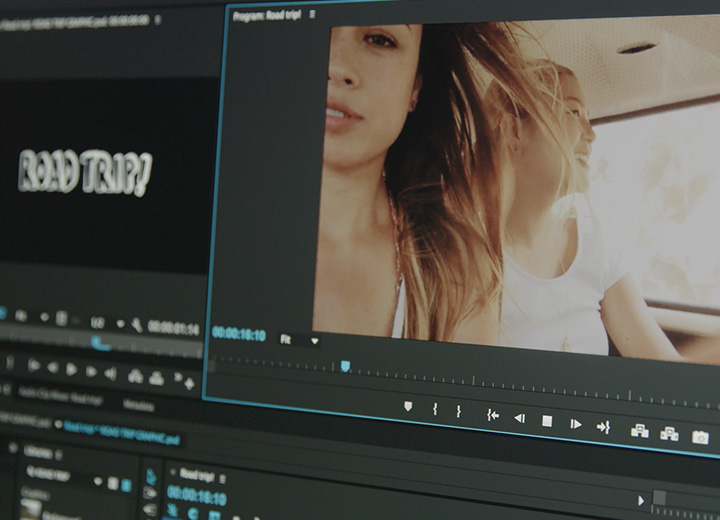
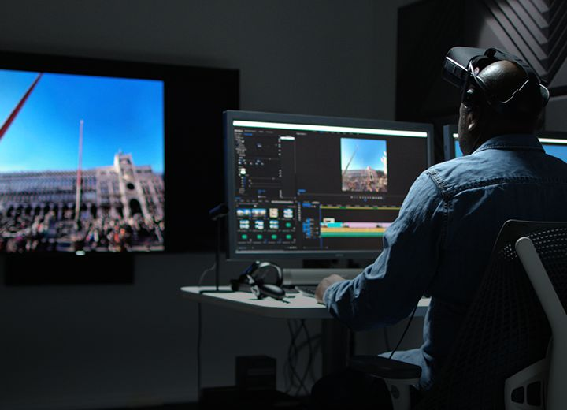

Пусть ваш лучший фильм появится на всех экранах.
Превращайте отснятый материал в безупречные кинокартины с Premiere Pro CC — передовым приложением для редактирования видео. Это приложение подходит как для опытных профессионалов, так и для начинающих пользователей. Редактируйте видео, корректируйте цвет, улучшайте качество звука и пользуйтесь многими другими функциями в единой интегрированной среде.
Расскажите свою историю. На своем языке.
Приложение Premiere Pro популярно среди продюсеров, пользователей YouTube, операторов, дизайнеров. Оно подойдет для всех, кто хочет рассказать свою историю, — в том числе и для вас.

Проекты для малого экрана. Грандиозный размах.
Что бы вы ни задумали, реализуйте идеи с помощью приложения, которое выбирают голливудские профессионалы. Заведите видеоблог, публикуйте вирусные видеоролики на YouTube или станьте авторитетным оператором. Импортируйте отснятый материал с любой камеры или телефона, обрезайте клипы, добавляйте титры и корректируйте звук. Благодаря интуитивным инструментам и многочисленным пошаговым руководствам вы быстро создадите превосходное видео.
Большие проекты для большого экрана.
Работаете над очередным шедевром? Premiere Pro — единственный нелинейный редактор, позволяющий работать одновременно с несколькими открытыми проектами и в то же время взаимодействовать с рабочей группой отдельного проекта. Кроме того, можно блокировать проекты, чтобы другие пользователи не могли внести изменения. Редактируйте видео и создавайте фильмы еще быстрее благодаря функциям для работы с цветом, графикой, звуком и контентом в формате 360/VR.

Любая камера. Любой формат.
Работайте с отснятым материалом любого формата, включая 8K, виртуальную реальность и видео для смартфонов. Самая широкая в отрасли поддержка исходных мультимедийных форматов и мощные функции создания прокси-версий позволяют мгновенно приступать к редактированию на любом компьютере, независимо от того, с какого устройства получен отснятый материал.
Полная совместимость.
Можно с легкостью переключаться между Premiere Pro и Adobe After Effects CC. Благодаря функции Adobe Dynamic Link вам не придется ждать завершения рендеринга. Приложение Premiere Pro также полностью совместимо с другими приложениями Creative Cloud, включая Photoshop, Illustrator и Adobe Media Encoder. А с помощью функции «Групповые проекты Adobe» редакторы по всему миру могут свободно взаимодействовать друг с другом, безопасно обмениваться материалами и т. д.